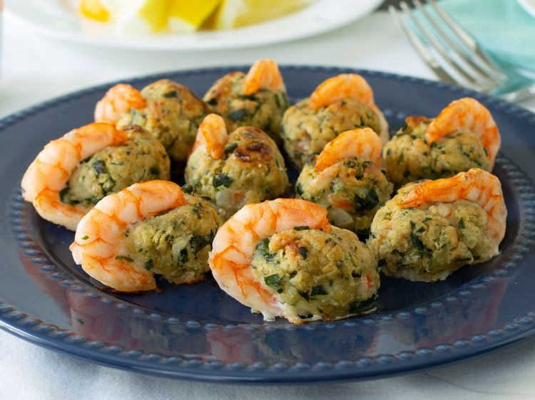

Baked Stuffed Shrimp Recipe
Home

Description:
This seafood dish is popping with flavor, but simple enough for a weeknight.
Ingredients:
- cooking spray
- 2 (4 ounce) packages crushed buttery round crackers (such as Ritz®)
- ½ cup freshly chopped parsley
- 5 saltine crackers, crushed
- ½ teaspoon celery salt
- 1 clove minced garlic
- 4 sea scallops, chopped
- ½ cup chopped imitation crabmeat
- ¼ cup butter, melted
- ¼ cup white wine
- 20 jumbo shrimp, peeled and deveined
Instructions:
- Gather all ingredients. Preheat the oven to 350 degrees F (175 degrees C).
- Combine room temperature sausage, biscuit mix, and shredded Cheddar together in a large bowl; mix with your hands until well combined. The mixture may seem dry at first, but keep mixing until it comes together evenly.
- Roll mixture into about 30 walnut-sized balls; transfer to a baking sheet.
- Bake in the preheated oven until golden brown and sausage is cooked through, 20 to 25 minutes.